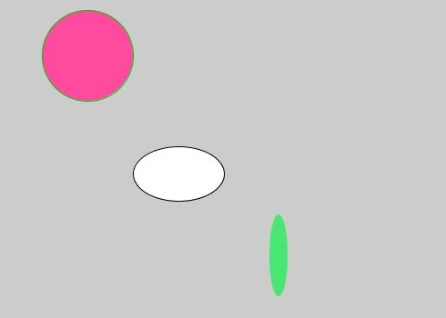
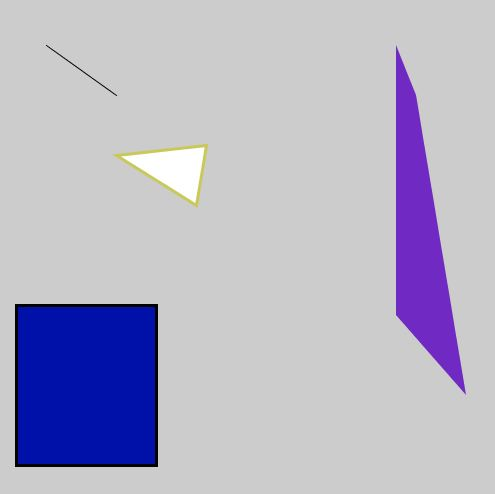

AR & VR
A-Frame
A-Frame is a framework that can be used to build virtual reality experiences. It works on both desktop and mobile, and works with coding languages like HTML. I completed part 1 of the A-Frame assignment.
Exercise 2.6
Exercise 2 was all about creating different shapes. For part 6 of this exercise I was tasked with creating at least three different shapes with different colors, positions and rotations.I made a box, ring, sphere and plane. The VR experience can be viewed here, or check the video.
Exercise 4.7
Exercise 4 taught me how to animate static objects. I first learned how to animate an object using A-Frame, after which part 7 went in on animating through JavaScript. You can see the result here, or watch the video.Unreal Engine
Unreal is a widely used game engine in which all kinds of games and virtual environments can be created. I completed both parts 1 and 2 of the assignment, which taught me the very basics of the Unreal Engine.
Part 1
In this part of the assignment I was introduced to Unreal’s interface, learned how to import assets, put a texture on a 3D model by creating a material, connecting several nodes, creating blueprints as well as a turntable, and finally made a 3D model spin. Watch the video to see my process.Part 2
Part 2 took me further into the actual game development side of Unreal. I primarily used blueprints to do numerous things, such as setting up a camera, creating a controllable pawn, setting up inputs and creating items that disappear upon touch. Check the video for the full development process.Arduino
Arduino is an open-source electronics platform based on easy-to-use hardware and software. Arduino boards are able to read inputs - light on a sensor, a finger on a button, or a Twitter message - and turn it into an output - activating a motor, turning on an LED, publishing something online. You can tell your board what to do by sending a set of instructions to the microcontroller on the board. To do so you use the Arduino programming language (based on Wiring), and the Arduino Software (IDE), based on Processing (source).
I was tasked with the completion of the Arduino manual, divided in three parts. From here on you will find numerous exercises from the manual.
Exercise 3C
For exercise 3C I had to connect both a yellow and green LED, and make the green LED blink twice as fast as the yellow one.
void setup() {
pinMode(13, OUTPUT);
pinMode(12, OUTPUT);
}
void loop() {
digitalWrite(13, LOW);
digitalWrite(12, LOW);
delay(500);
digitalWrite(13, HIGH);
digitalWrite(12, HIGH);
delay(500);
digitalWrite(13, LOW);
delay(500);
digitalWrite(13, HIGH);
digitalWrite(12, LOW);
delay(500);
} Exercise 4C
For exercise 4C I was supposed to extend the provided Arduino code, so that one LED would slowly fade in as the other LED would slowly fade out.
float sensorValue = 0;
int sensorPin = A0;
int greenLedPin = 10;
void setup() {
Serial.begin(9600);
pinMode(sensorPin, INPUT);
pinMode(greenLedPin, OUTPUT);
}
void loop() {
sensorValue = analogRead(sensorPin);
sensorValue = (sensorValue/1023)*255;
analogWrite(greenLedPin, sensorValue);
Serial.println(sensorValue);
delay(100);
} Exercise 6C
Exercise 6C was quite similar to the previous exercise 4C, but in this case I had to add a potentiometer and control the LEDs through it. Once again, one LED was to fade in while the other faded out.
float sensorValue = 0;
int sensorPin = A0;
int greenLedPin = 10;
int yellowLedPin = 9;
void setup() {
Serial.begin(9600);
pinMode(sensorPin, INPUT);
pinMode(greenLedPin, OUTPUT);
pinMode(yellowLedPin, OUTPUT);
}
void loop() {
sensorValue = analogRead(sensorPin);
sensorValue = (sensorValue/1023)*255;
analogWrite(greenLedPin, sensorValue);
analogWrite(yellowLedPin, 1023 - sensorValue);
Serial.println(sensorValue);
delay(100);
} Exercise 7C
For this exercise, I’d be using the 8x8 LED matrix. I connected the potentiometer to it and was tasked with changing the display depending on the value given by the potentiometer.
#include "LedControl.h"
LedControl lc = LedControl(12,11,10,1);
void setup() {
lc.shutdown(0,false);
lc.setIntensity(0,5);
lc.clearDisplay(0);
Serial.begin(9600);
}
void loop(){
int sensorValue = analogRead(A0);
Serial.println(sensorValue);
sensorValue = map(sensorValue, 0, 1000, 0, 7);
lc.clearDisplay(0);
if(sensorValue==0){
lc.setRow(0, 0, B11111111);
lc.setRow(0, 7, B11111111);
lc.setColumn(0, 0, B11111111);
lc.setColumn(0, 7, B11111111);
delay(100);
}
if(sensorValue==1){
lc.setRow(0, 1, B01111110);
lc.setRow(0, 6, B01111110);
lc.setColumn(0, 1, B01111110);
lc.setColumn(0, 6, B01111110);
delay(100);
}
if(sensorValue==2){
lc.setRow(0, 2, B00111100);
lc.setRow(0, 5, B00111100);
lc.setColumn(0, 2, B00111100);
lc.setColumn(0, 5, B00111100);
delay(100);
}
if(sensorValue==3){
lc.setRow(0, 3, B00011000);
lc.setRow(0, 4, B00011000);
lc.setColumn(0, 3, B00011000);
lc.setColumn(0, 4, B00011000);
delay(100);
}
if(sensorValue==4){
lc.setRow(0, 4, B00011000);
lc.setRow(0, 3, B00011000);
lc.setColumn(0, 4, B00011000);
lc.setColumn(0, 3, B00011000);
delay(100);
}
if(sensorValue==5){
lc.setRow(0, 5, B00111100);
lc.setRow(0, 2, B00111100);
lc.setColumn(0, 5, B00111100);
lc.setColumn(0, 2, B00111100);
delay(100);
}
if(sensorValue==6){
lc.setRow(0, 6, B01111110);
lc.setRow(0, 1, B01111110);
lc.setColumn(0, 6, B01111110);
lc.setColumn(0, 1, B01111110);
delay(100);
}
if(sensorValue==7){
lc.setRow(0, 7, B11111111);
lc.setRow(0, 0, B11111111);
lc.setColumn(0, 7, B11111111);
lc.setColumn(0, 0, B11111111);
delay(100);
}
} Exercise 9B
Exercise 9B was all about sound. I had to expand the provided code so that it would play a creative melody. I seem to have lost the working code, but the video states I got it to work.
int speakerPin = 8;
int ldrPin = A0;
void setup() {
pinMode(speakerPin, OUTPUT);
pinMode(ldrPin, INPUT);
}
void loop() {
int ldrValue = analogRead(ldrPin);
int speakerValue = map(ldrValue, 0, 1023, 100, 2000);
tone(speakerPin, speakerValue);
} Exercise 9D
For exercise 9D I would be making an instrument a lot like the theremin. The speaker would produce a constant tone depending on the amount of incoming light from the LDR sensor. I seem to have lost the working code once again, but the video states I got it to work.
int speakerPin = 8;
int ldrPin = A0;
void setup() {
pinMode(speakerPin, OUTPUT);
pinMode(ldrPin, INPUT);
Serial.begin(9600);
}
void loop() {
int ldrValue = analogRead(ldrPin);
int speakerValue = map (ldrValue, 0, 1023, 100, 2000);
Serial.println(ldrValue);
if(ldrValue > 514){
tone(speakerValue ++);
}
if(sensorValue < 514){
tone(speakerValue --);
}
delay(10);
} Exercise 10D
For exercise 10D I was tasked with determining the threshold value of the NTC or temperature sensor, after which the LED would turn off when the sensor value was lower than the threshold value. I seem to have lost the working code for this one as well, but the video states I got it to work.
int ledPin = 13;
int sensorPin = A0;
void setup() {
pinMode(ledPin, OUTPUT);
pinMode(sensorPin, INPUT);
Serial.begin(9600);
}
void loop() {
int sensorValue = analogRead(sensorPin);
Serial.println(sensorValue);
delay(10); // wait
} Exercise 11D
For exercise 11D I was supposed to make a social distance indicator, using the ultrasonic proximity sensor and three different colored LEDs, that would function as a traffic light. If anything was closer than 1.40m, the red LED would turn on. If anything was between 1.40m and 1.60m away, the yellow LED would turn on. And the same goes for the green LED if anything was farther away than 1.60m.
const int echoPin = 6;
const int trigPin = 7;
int redLedPin = 10;
int yellowLedPin = 11;
int greenLedPin = 12;
void setup() {
pinMode(echoPin, INPUT);
pinMode(trigPin, OUTPUT);
pinMode(redLedPin, OUTPUT);
pinMode(yellowLedPin, OUTPUT);
pinMode(greenLedPin, OUTPUT);
Serial.begin(9600);
}
void loop() {
digitalWrite(trigPin, LOW);
delayMicroseconds(2);
digitalWrite(trigPin, HIGH);
delayMicroseconds(5);
digitalWrite(trigPin, LOW);
long duration = pulseIn(echoPin, HIGH);
int cm = duration / 29 / 2;
if(cm<140){
digitalWrite(redLedPin, HIGH);
digitalWrite(yellowLedPin, LOW);
digitalWrite(greenLedPin, LOW);
}
else if(cm>140 && cm<160){
digitalWrite(redLedPin, LOW);
digitalWrite(yellowLedPin, HIGH);
digitalWrite(greenLedPin, LOW);
}
else{
digitalWrite(redLedPin, LOW);
digitalWrite(yellowLedPin, LOW);
digitalWrite(greenLedPin, HIGH);
}
Serial.println(cm);
delay(100);
} Exercise 12E
For exercise 12E I was to combine Arduino and Processing. I had to adjust the provided code to use the potentiometer sensor in an interesting way. I chose to use Arduino’s potentiometer value for changing the color of a square in Processing. I ran into some trouble setting up the serial port in processing. I eventually got it to work by using serialIndex, rather than a set value. I once again seem to have lost the Arduino code for this one, but the video states I got it to work.Processing code
import processing.serial.*; Serial myPort; String sensorReading=""; int serialIndex = 0; void setup() { size(400, 400); myPort = new Serial(this, Serial.list()[serialIndex], 9600); myPort.bufferUntil('\n'); } void draw() { rect(125, 125, 150, 150); fill(float(sensorReading), float(sensorReading), float(sensorReading)); } void serialEvent (Serial myPort) { sensorReading = myPort.readStringUntil('\n'); }
Arduino code
float sensorValue = 0; int sensorPin = A0; int greenLedPin = 10; void setup() { Serial.begin(9600); pinMode(sensorPin, INPUT); pinMode(greenLedPin, OUTPUT); } void loop() { sensorValue = analogRead(sensorPin); sensorValue = (sensorValue/1023)*255; analogWrite(greenLedPin, sensorValue); Serial.println(sensorValue); delay(100); }
Exercise 13E
Exercise 13E tasked me with setting up two buttons. Both buttons were to turn on the same LED when pushed individually.
int ledPin = 13;
int buttonPinL = 3;
int buttonPinR = 2;
int buttonStateL = 0;
int buttonStateR = 0;
void setup() {
pinMode(ledPin, OUTPUT);
pinMode(buttonPinL, INPUT);
pinMode(buttonPinR, INPUT);
}
void loop(){
buttonStateL = digitalRead(buttonPinL);
buttonStateR = digitalRead(buttonPinR);
if(buttonStateL == HIGH){
digitalWrite(ledPin, HIGH);
}
else if(buttonStateR == HIGH){
digitalWrite(ledPin, HIGH);
}
else{
digitalWrite(ledPin, LOW);
}
} Exercise 14C
Exercise 14C got into the usage of the servomotor. I had to set up the servomotor as output and the potentiometer as input. I remapped the incoming value of the potentiometer to be able to match the servomotor’s turning radius.
#include <Servo.h>
Servo myServo;
int servoPin = 9;
int pos = 0;
int potentioPin = A0;
int potentioValue = 0;
void setup() {
myServo.attach(servoPin);
pinMode(potentioPin, INPUT);
Serial.begin(9600);
}
void loop() {
potentioValue = analogRead(potentioPin);
Serial.println(potentioValue);
potentioValue = map(potentioValue, 0, 1023, 0, 160);
myServo.write(potentioValue);
} Exercise 15C
For the last exercise of the Arduino manual, I got to make a piano using strawberries! The strawberries were used as capacitive input for the speaker’s audio output. Turn on your sound for this one!
#include <CapacitiveSensor.h>
CapacitiveSensor touchSwitchA = CapacitiveSensor(13, 12);
CapacitiveSensor touchSwitchB = CapacitiveSensor(11, 10);
CapacitiveSensor touchSwitchC = CapacitiveSensor(9, 8);
CapacitiveSensor touchSwitchD = CapacitiveSensor(7, 6);
CapacitiveSensor touchSwitchE = CapacitiveSensor(5, 4);
CapacitiveSensor touchSwitchF = CapacitiveSensor(3, 2);
int speakerPin = A0;
void setup(){
Serial.begin(9600);
pinMode(speakerPin, OUTPUT);
}
void loop(){
long valueA = touchSwitchA.capacitiveSensor(30);
valueA = constrain(valueA, 150, 3000);
valueA = map(valueA, 150, 3000, 0, 255);
Serial.println(valueA);
if (valueA>100){
tone(speakerPin, 440, 200);
}
long valueB = touchSwitchB.capacitiveSensor(30);
valueB = constrain(valueB, 150, 3000);
valueB = map(valueB, 150, 3000, 0, 255);
Serial.println(valueB);
if(valueB>100){
tone(speakerPin, 493, 200);
}
long valueC = touchSwitchC.capacitiveSensor(30);
valueC = constrain(valueC, 150, 3000);
valueC = map(valueC, 150, 3000, 0, 255);
Serial.println(valueC);
if (valueC>100){
tone(speakerPin, 262, 200);
}
long valueD = touchSwitchD.capacitiveSensor(30);
valueD = constrain(valueD, 150, 3000);
valueD = map(valueD, 150, 3000, 0, 255);
Serial.println(valueD);
if (valueD>100){
tone(speakerPin, 330, 200);
}
long valueE = touchSwitchE.capacitiveSensor(30);
valueE = constrain(valueE, 150, 3000);
valueE = map(valueE, 150, 3000, 0, 255);
Serial.println(valueE);
if (valueE>100){
tone(speakerPin, 330, 200);
}
long valueF = touchSwitchF.capacitiveSensor(30);
valueF = constrain(valueF, 150, 3000);
valueF = map(valueF, 150, 3000, 0, 255);
Serial.println(valueF);
if (valueF>100){
tone(speakerPin, 349, 200);
}
} Processing
Processing is a programming language and is somewhat similar to the code I used for Arduino. However, Processing can be used to program interactive images and animations. It runs on Java, but is easier and faster to learn and use than the Java language. The workshop comprised of four larger exercises, each divided into parts.
Exercise 2F
For exercise 2F I wrote a program that draws three different elliptical shapes, with different fill and stroke colors.
void setup(){
size(500,500);
ellipseMode(CORNER);
ellipse(150, 200, 100, 60);
fill(255,74,160);
stroke(0,200,0);
ellipse(50, 50, 100, 100);
fill(73, 230, 115);
noStroke();
ellipse(300, 275, 20, 90);
fill(0, 92, 90);
stroke(1);
}
void draw(){
} Exercise 2I
Exercise 2I required me to draw four different shapes. I coded a line, triangle, quad and rectangle, again using different colored fills and strokes.
int diameter = 200;
void setup() {
size(200,200);
smooth();
background (200,200,200);
frameRate(15);
}
void draw() {
ellipse(width/2, height/2, diameter, diameter);
diameter--;
} Exercise 2O
For exercise 2O, I was tasked with drawing at least two different shapes with various colors. They also had to be interactive. I made four lines and one circle, which, depending on the position of the mouse on the X and Y axes would change color and, in case of the lines, stroke weight.
int diameter = 10;
void setup() {
size(500,500);
background (200,200,200);
frameRate(15);
}
void draw() {
background(200, 200, 200);
ellipse(mouseX, mouseY, 100, 100);
line(width/2, 0, mouseX, mouseY);
line(0, height/2, mouseX, mouseY);
line(width/2, height, mouseX, mouseY);
line(width, height/2, mouseX, mouseY);
fill(map(sin((mouseY+mouseX) * 0.01), 0, 1, 0, 255), map(mouseX, 0, 500, 0, 255), map(mouseY, 0, 500, 0, 255));
stroke(map(sin((mouseY+mouseX) * 0.01), 0, 1, 0, 255), map(mouseX, 0, 500, 0, 255), map(mouseY, 0, 500, 0, 255));
strokeWeight(map(mouseX, 0, 500, 20, 0));
} Exercise 3B
Exercise 3 was about computer vision. By using both the OpenCV and Video libraries in Processing, I’d be able to track faces and facial features, to then enhance it with different shapes and elements. Exercise 3B specifically tasked me with putting a black bar over the eyes upon recognizing a face, as well as give that face a red nose.I ran into quite some trouble setting up the camera, getting the LiveCam to work, and even to get the FaceDetection to work. Processing kept giving me the error that the Cascade failed to load. I wasn’t able to fix the issues with either the LiveCam or FaceDetection, so I eventually decided to move on.
I did however try to write the code that would effectively do what I wanted it to, if either the LiveCam or FaceDetection would’ve worked. I added the corresponding code, although I didn’t get to test it.
import gab.opencv.*;
import java.awt.Rectangle;
OpenCV opencv;
Rectangle[] nose;
Rectangle[] eyes;
void setup() {
opencv = new OpenCV(this, "test.jpg");
size(1080, 720);
opencv.loadCascade(OpenCV.CASCADE_EYE);
eyes = opencv.detect();
opencv.loadCascade(OpenCV.CASCADE_NOSE);
nose = opencv.detect();
}
void draw() {
image(opencv.getInput(), 0, 0);
for (int i = 0; i < eyes.length; i++) {
rect(eyes[i].x, eyes[i].y, eyes[i].width, eyes[i].height);
fill(0, 0, 0);
noStroke();
}
for (int i = 0; i < nose.length; i++) {
ellipse(nose[i].x, nose[i].y, nose[i].width, nose[i].height);
fill(255, 0, 0);
noStroke();
}
} Exercise 3D
The same goes for exercise 3D. For this exercise I had to enhance a recognized face using an image. I wanted to put a lollipop in the recognized face’s mouth by specifically tracking the mouth and inserting a lollipop image in the code. I added the code for this exercise as well, but once again I didn’t get to test if it actually works.
import gab.opencv.*;
import java.awt.Rectangle;
PImage img;
OpenCV opencv;
Rectangle[] mouth;
void setup() {
opencv = new OpenCV(this, "test.jpg");
img = loadImage("lollipop.jpg");
size(1080, 720);
opencv.loadCascade(OpenCV.CASCADE_MOUTH);
mouth = opencv.detect();
}
void draw() {
image(opencv.getInput(), 0, 0);
for (int i = 0; i < mouth.length; i++) {
image(img, mouth[i].x, mouth[i].y, mouth[i].width, mouth[i].height);
}
} Exercise 4B
Exercise 4 combined Processing with Arduino, and taught me the possibilities when the two are combined. Exercise 4A provided me with example code, which turned on an LED on the Arduino when I put my mouse over a square drawn with Processing. Now, exercise 4B required me to make a new combination between the two programs.I changed the example code as follows. Programming still draws a square, although slightly bigger. Upon clicking the square, instead of hovering over it, it turns red. Meanwhile, a signal gets sent to the Arduino, which then displays the message “Hi” on the 8x8 LED matrix I set up on the Arduino side. As long as the square in Programming keeps being pressed, the LED matrix will display the message. Check the video and corresponding code below!
Processing code
import processing.serial.*; Serial myPort; int val; void setup(){ size(500, 500); String portName = Serial.list()[0]; myPort = new Serial(this, portName, 9600); } void draw() { background(255); if (mousePressed == true) { fill(255, 0, 0); myPort.write('H'); } else { fill(0); myPort.write('L'); } rect(150, 150, 200, 200); }
Arduino code
#include "LedControl.h" char val; LedControl lc = LedControl(12,11,10,1); void setup() { Serial.begin(9600); lc.shutdown(0,false); lc.setIntensity(0,8); lc.clearDisplay(0); } void loop() { while (Serial.available()) { val = Serial.read(); } if (val == 'H') { lc.setRow(0,0,B00000000); lc.setRow(0,1,B01001010); lc.setRow(0,2,B01001010); lc.setRow(0,3,B01111010); lc.setRow(0,4,B01001010); lc.setRow(0,5,B01001010); lc.setRow(0,6,B00000000); lc.setRow(0,7,B00000000); } else { lc.setRow(0,0,B00000000); lc.setRow(0,1,B00000000); lc.setRow(0,2,B00000000); lc.setRow(0,3,B00000000); lc.setRow(0,4,B00000000); lc.setRow(0,5,B00000000); lc.setRow(0,6,B00000000); lc.setRow(0,7,B00000000); } delay(100); }